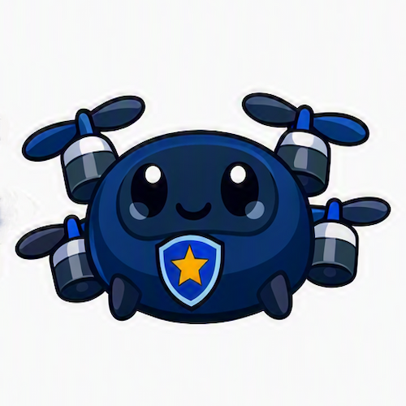

게임
레이싱 → 2DCombat → FPS, 게임 3개를 순서대로 완성
흥미로운 걸 좋아하고, 남들과 다른 관점을 가지고 있어 직접 만들어보는 사람입니다. 게임·드론·보안을 만들어보며 개발을 배웠고, 지금은 Java 백엔드로 기초를 다지고 있습니다. 이 페이지는 저를 채용할지 검토하는 분께 제가 무엇을 만들어봤는지 보여주기 위한 곳입니다.
레이싱 → 2DCombat → FPS, 게임 3개를 순서대로 완성
드론과 미션을 골라 비행하는 시뮬레이터

로그인 공격을 막고 기록하는 방어 시스템 이지스
위 3개 외에도 같은 방식으로 계획하고 완성까지 끝낸 프로젝트들입니다.
내가 정한 것 데이터(환율)와 API 선택
AI가 짠 것 화면, 재시도 로직, 테스트 코드
내가 고친 것 API 주소 교체, 두 컴퓨터 작업 충돌 해결
내가 정한 것 Firebase 전환, 결과물·소스를 GitHub 한 곳에
AI가 짠 것 화면·저장 코드, 자동 테스트
내가 고친 것 '없음' 입력이 막힘으로 집계되는 버그 발견
위 소개는 누구나 볼 수 있습니다. 이 아래는 패스키로 로그인한 사람에게만 서버가 보여주는 비공개 공간입니다. 비밀번호는 없습니다.
버튼을 누르면 이 기기가 서버가 낸 새 문제(챌린지)에 서명합니다. 아이디도 비밀번호도 입력하지 않습니다.
패스키는 최대 5개입니다. 마지막 하나는 지울 수 없습니다.
로그인·등록·거부 기록입니다. 세션 표식은 앞 4글자만 보이게 가립니다.
화면을 거치지 않고 서버에 바로 요청해서, 거부되는지 확인합니다.